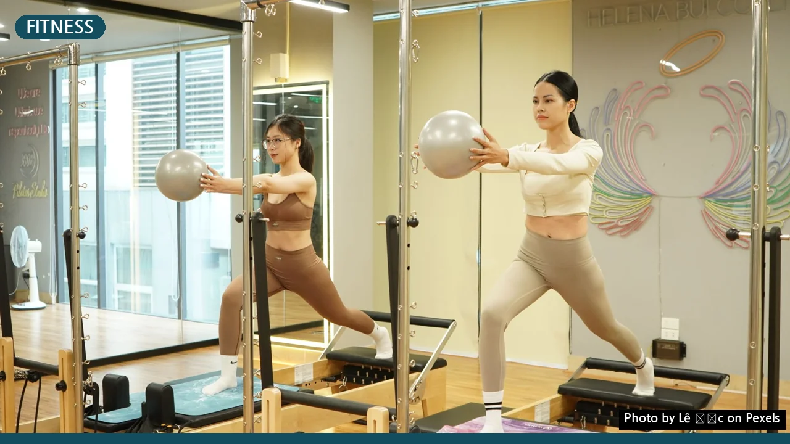
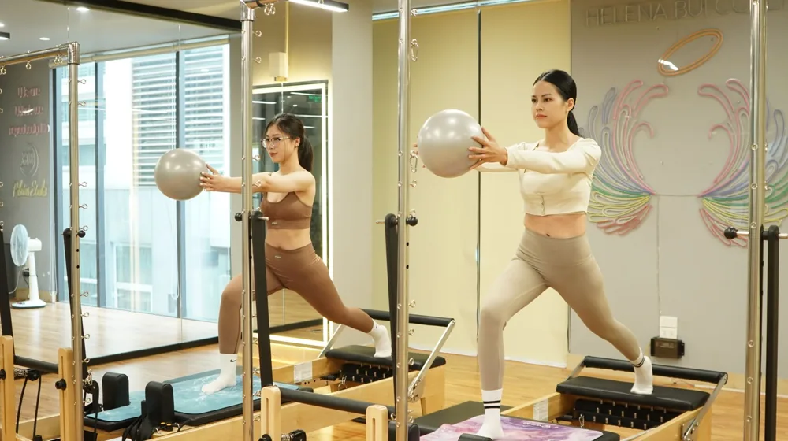

필라테스 vs 요가, 나에게 딱 맞는 운동은? 5가지 핵심 차이 비교
사진: Lê Đức / Pexels (무료 이미지, 출처 표기)
필라테스와 요가, 목표부터 달라요 (근본적인 차이 이해하기)

필라테스와 요가는 둘 다 신체와 정신을 단련하는 운동으로 알려져 있습니다. 하지만 시작점과 추구하는 목표에서 명확한 차이를 보입니다. 이러한 차이를 이해하는 것이 자신에게 맞는 운동을 선택하는 첫걸음입니다.
필라테스는 20세기 초 독일인 조셉 필라테스가 고안한 운동으로, 전쟁 중 부상병들의 재활을 돕기 위해 개발되었습니다. 따라서 코어 근육(파워하우스) 강화와 신체 정렬, 그리고 조절된 움직임을 통해 몸의 불균형을 개선하고 근력을 키우는 데 중점을 둡니다.
반면 요가는 수천 년 전 인도에서 시작된 심신 수련법입니다. 육체적인 자세(아사나)뿐만 아니라 호흡(프라나야마)과 명상을 통해 정신적인 안정과 집중력을 높이고, 몸과 마음의 조화를 추구하는 철학적 배경을 가지고 있습니다. 유연성과 균형 감각 증진에 집중하는 경향이 있습니다.
신체에 미치는 효과, 무엇이 다를까? (장점 및 단점 비교)
두 운동 모두 신체 건강에 긍정적인 영향을 주지만, 얻을 수 있는 구체적인 효과는 다릅니다. 필라테스는 주로 코어 근육과 속근육을 단련하여 자세 교정, 통증 완화, 신체 조절 능력 향상에 탁월합니다. 운동선수들의 기량 향상이나 부상 예방에도 많이 활용됩니다.
요가는 전신 스트레칭을 통해 유연성을 극대화하고, 다양한 아사나를 통해 균형 감각과 집중력을 길러줍니다. 또한 깊은 호흡과 명상을 통해 스트레스를 해소하고 심신 안정에 도움을 주어, 정신적인 웰빙을 중요하게 생각하는 분들에게 특히 유용합니다.
다음 표를 통해 필라테스와 요가의 주요 특징을 비교해 보세요.
이런 분께 필라테스, 저런 분께 요가 추천! (개인별 맞춤 가이드)
각 운동의 특징과 효과를 고려하여 나에게 더 적합한 운동을 선택할 수 있습니다. 자신의 운동 목표와 신체 상태를 솔직하게 파악하는 것이 중요합니다.
- 필라테스 추천 대상:
- 자세 불균형이나 거북목, 굽은 어깨 등 체형 교정을 원하는 분
- 평소 허리, 목 등 관절 통증으로 재활 운동이 필요한 분
- 탄탄한 코어 근육을 키워 신체 안정성을 높이고 싶은 분
- 섬세하고 정교한 근력 운동으로 신체 라인을 가꾸고 싶은 분
- 출산 후 약해진 골반저근 강화 및 산후 회복을 원하는 분
- 요가 추천 대상:
- 유연성이 부족하여 몸을 부드럽게 만들고 싶은 분
- 스트레스 해소와 마음의 평화를 얻고 싶은 분
- 정신적인 집중력과 명상으로 심신을 안정시키고 싶은 분
- 전신 이완을 통해 몸과 마음의 긴장을 풀고 싶은 분
- 균형 감각을 향상시키고 전신 근육을 고르게 사용하고 싶은 분
실패 없이 시작하는 필라테스/요가, 체크리스트 (초보자 고려사항)
성공적인 운동 시작을 위해 몇 가지 사항을 미리 점검하는 것이 좋습니다. 단순히 유행을 따르기보다 자신의 상황을 고려한 현명한 선택이 필요합니다.
- 명확한 운동 목표 설정: 근력 강화, 유연성 증진, 통증 완화, 스트레스 해소 등 무엇을 가장 얻고 싶은지 명확히 합니다.
- 현재 신체 상태 확인: 과거 부상 이력이나 현재 통증 부위, 유연성이나 근력 수준 등을 고려하여 무리 없는 운동을 선택합니다. 특히 만성 질환이 있다면 전문가와 상담 후 결정하는 것이 좋습니다.
- 수업 환경 및 강사 전문성: 개인 레슨과 그룹 레슨 중 자신에게 맞는 수업 형태를 선택하고, 강사의 경험과 전문성을 확인하여 부상 위험을 줄이고 효과를 높이세요.
- 비용 및 접근성: 운동 스튜디오의 위치, 월 수강료, 그리고 필요하다면 매트나 운동복 같은 장비 구매 비용까지 고려하여 꾸준히 지속할 수 있는 환경을 선택합니다.
- 체험 수업 적극 활용: 많은 스튜디오에서 무료 또는 저렴한 가격으로 체험 수업을 제공합니다. 여러 곳의 필라테스와 요가 수업을 직접 경험해보고 자신에게 가장 잘 맞는 곳을 선택하는 것이 중요합니다.
두 운동, 함께 해도 좋을까요? (궁금증 해소 및 주의할 점)
필라테스와 요가는 서로 다른 강점을 가지고 있어, 두 가지 운동을 병행하는 것이 시너지 효과를 낼 수 있습니다. 예를 들어, 요가를 통해 유연성을 충분히 확보한 후 필라테스로 코어 근력을 강화하면 더욱 안정적이고 효율적인 신체 단련이 가능합니다.
하지만 모든 운동이 그렇듯, 처음부터 무리하게 강도를 높이거나 올바르지 못한 자세로 운동하면 부상으로 이어질 수 있습니다. 자신의 신체 능력과 컨디션을 고려하여 적절한 운동량과 강도를 유지하는 것이 중요합니다.
항상 숙련된 강사의 지도 아래 안전하게 운동하고, 몸에 이상 징후가 느껴진다면 즉시 운동을 중단하고 전문가와 상담하는 것을 권장합니다. 꾸준함과 인내심을 가지고 즐겁게 운동한다면 몸과 마음 모두 건강해지는 경험을 할 수 있을 것입니다.
🔗 이 글도 함께 보면 좋아요: 인기 무선 이어폰 비교 구매 가이드: 나에게 맞는 모델 찾기
관련 추천 상품
이 포스팅은 쿠팡 파트너스 활동의 일환으로, 이에 따른 일정액의 수수료를 제공받습니다.